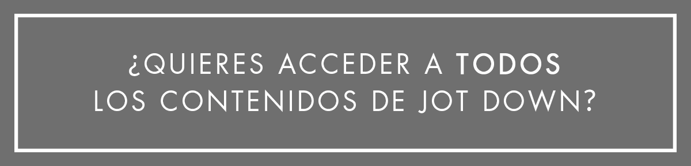
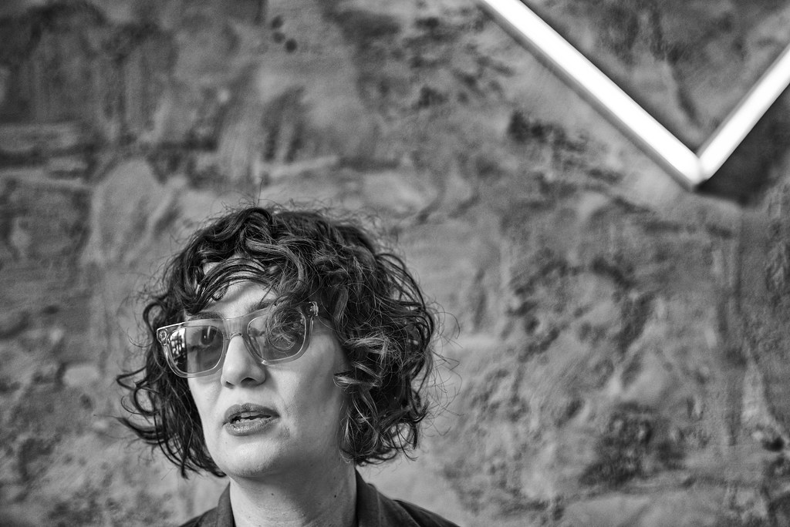
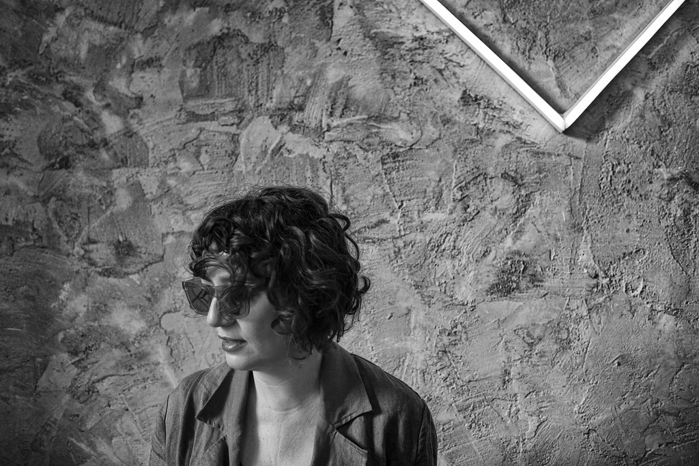

Subscripción
Acceder
Mi Cuenta
Tienda
Autores
Librerías
Agenda
Tarifas
Contacto
Privacidad
Hemeroteca

Arte y letras
Ciencia
Cine y televisión
Deportes
Entrevistas
Música
Ocio y Vicio
Política
Sociedad
Ana Galvañ: «Creo que ha hecho bastante daño llamar novela gráfica a los cómics»
Publicado por Iván Galiano

«Mira, Ana, tus colores» le digo a Ana Galvañ (Murcia, 1980) en la cafetería del madrlieño barrio de La Latina en la que celebramos esta entrevista. En una de las paredes reposaba un helado gigante dibujado con neones amarillo, azul y rosa. Con la ilusión de que dicho cromático artefacto juegue algún papel en el reportaje fotográfico que acompaña a esta entrevista propongo sentarnos cerca para que la figura de la autora quede enmarcada por el juego de colores, sin recordar que, como es tradición en esta entrevista… esos colores se perderían después. La verdad es que Galvañ no necesita de ningún aura que la engalane, dado que su carrera como artista gráfica —autora de cómics e ilustradora, pero también fundadora de plataforma de cómics digitales y comisaria de exposiciones— habla por sí misma. Así que hablamos. Hablamos de cómics, de la vida del dibujante, de la industria del cómic, de vanguardia. Y también de colores. Y del porqué de los colores.
¿Por qué las artes gráficas?
Uf. Espera que piense un poco. Pues es que yo ya era una cría que me pasaba un montón de horas dibujando encerrada en mi habitación. Era la típica niña con un mundo interior muy grande y mis padres además eran muy conscientes de ello. Valoraban la faceta artística porque el hobby de mi padre también era dibujar y le gustaba el cine y la ciencia ficción. También hay bastantes músicos en mi familia. Entonces ellos fomentaron mi faceta artística y cuando quise entrar en la Escuela de Artes y después hacer Bellas Artes, me apoyaron. Así que tuve bastante suerte porque podría haber hecho otra carrera. Tenía en mente carreras de ciencia que me gustaban, pero al final decidí hacer esto.
¿Qué te inspiraba a dibujar? ¿Cuales eran tus primeras influencias?
Lo tengo muy claro porque me lo han preguntado muchas veces (risas). Empecé con Mortadelo, Zipi y Zape y el cómic juvenil en general. Pero enseguida me enganché al anime en la tele. Pasaba mucho tiempo viendo series de animación que después me compré en formato físico. Por ejemplo, Dragon Ball, que la veía con mi hermano… me emocionaba muchísimo. Nos lo sabíamos todo en valenciano porque lo veíamos en el Canal 9. Y después lo que hice fue comprarme todos los cómics. Y una de las series que más me gustaba era Ulises 31. Mis padres, que eran muy majos, me compraron la carpeta, los pósteres, todo el merchandising. Y Robotech. Yo era muy feliz, me marcaron mucho todas esas series de ciencia ficción, con robots y viajes al espacio, pero que también tenían una trama muy de culebrón… Me enganchaba mucho esa fórmula.
